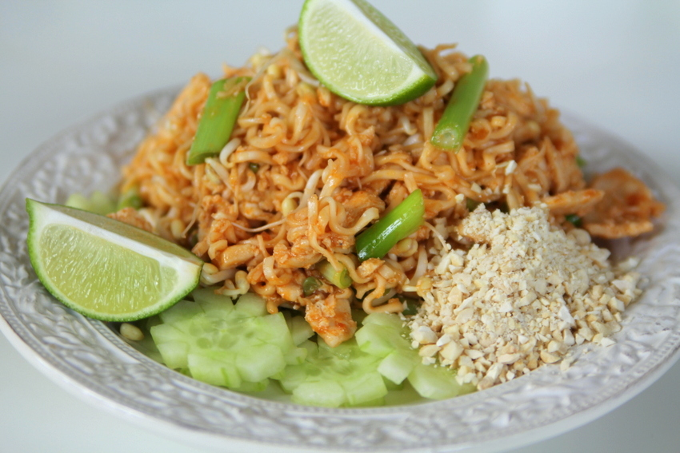

Pad Thai

Description
This is an easy, quick, and most importantly - yummy - recipe of Pad Thai!
You only need a few ingredients:
- 1 kg chicken
- 2 Santa Maria pad thai sauce
- A few tablespoons of soy sauce
- 2 packets of rice noodles
- 4-5 carrots
- 1/2 cabbage
- 1 leek
- 1 lime
- 2 eggs
- 200 gram peanuts
Steps
- Roughly shred the carrots, and shop the leek
- Cut the chicken into small pieces
- Crush the peanuts
- Boil water for the noodles
- Fry the chicken in oil on high heat until its done
- Meanwhile add the noodles and boil them for 3 minutes
- Add the vegetables and stir on medium heat for 2 minutes
- Cut up the noodles and add them to the chicken and vegetable mix
- Crack the eggs into your mix
- Add the pad thai sauce and soy sauce
- Serve with lime and crushed peanuts, enjoy!